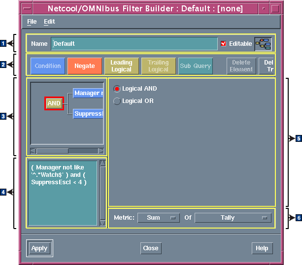

フィルター・ビルダーを使用して、イベント・リストのフィルターを構成します。
以下の図は、UNIX フィルター・ビルダーを示しています。
図 1. UNIX 上のフィルター・ビルダー
フィルター・ビルダーには、以下の領域が含まれています。
- 1 フィルター・セットアップ域
- この領域を使用して、名前を定義し、フィルターの許可を設定します。
- 2 ボタン・バー
- これらのボタンを使用して、フィルター・エレメントを定義します。
- 3 グラフィック表示域
- この領域には、現在のフィルターのエレメント定義が、エレメント間の関係を示すグラフィカル・ツリー構造で表示されます。 エレメントをツリーに追加するには、ボタン・バーにあるボタンを使用します。 現在選択されているエレメントは、周囲に赤い枠を付けて示されています。 編集は、現在のエレメントを基準にして行われます。 この領域内のエレメントを選択すると、その詳細が表示され、エレメント定義域内で編集できます。
- 4 SQL 表示域
- SQL 表示域には、フィルターを作成する際に SQL が表示されます。 ボタン・バーで「SQL の編集」をクリックすると、「フィルター SQL の編集」ウィンドウ内で SQL を直接編集できます。
- 5 エレメント定義域
- この領域には、現在選択されているエレメントの詳細が表示され、異なる値のセットの指定を可能にします。 選択した項目は、グラフィカル表示域、および SQL 表示域に反映されます。
- 6 メトリック領域
- メトリック・ボタンを使用してフィルターに測定を適用し、有用な数値がフィルターで計算されるようにします。 例えば、「計算合計」メトリックは、ObjectServer 内の重複アラートの総数を算出します。